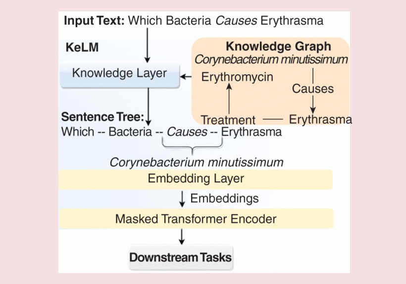
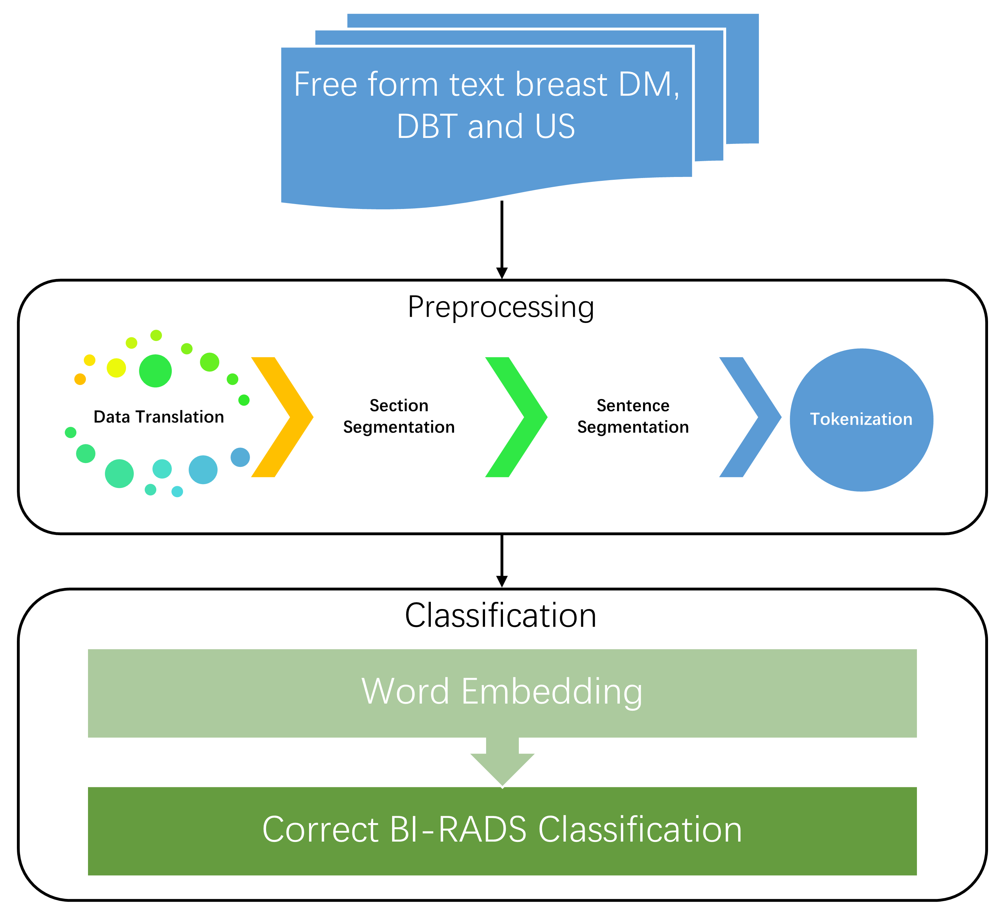

Sadam Hussain
Ph.D. candidate |
 |


Short-Bio
I am a 4th year PhD candidate at the School of Engineering and Sciences, Tecnologico de Monterrey, Mexico, advised by Dr. Jose Tamez-Peña. Before joining this institute, I was working as a lecturer at Shaikh Ayaz University, Shikarpur, Pakistan .
My research interests lie at the intersection of computer vision and machine learning and natural language processing. I have been working on developing multimodal deep learning models for breast cancer diagnosis.
News
- [01/2025] One paper published at IEEE Systems, Man, and Cybernetics Magazine .
- [12/2024] One paper published at IEEE Access.
- [11/2024] Attended ACM Multimedia Conference in Melbourne, Australia and presented our paper.
- [10/2024] One paper accepted at VLM4Bio Workshop at ACM MM conference in Melbourne, Australia .
- [10/2024] One paper accepted at BMC Medical Informatics and Decision Making Journal.
- [09/2024] One paper accepted at Cancer Prevention, Detection and Intervention at MICCAI24, Morroco.
- [06/2024] Attended paperaMexican NLP summer school colocated with NAACL in Mexico city, Mexico.
- [09/2023] Started as visiting researcher at University of Victoria, Canada.
Selected Publications [Google Scholar]
(* Co-first auhtor; † indicates corresponding authorship)|  | Knowledge Enhanced Language Model for Biomedical Natural Language Processing: Introducing a New Language Model for BioNLP. Usman Naseem†, Qi Zhang, Liang Hu, Sadam Hussain, Shoujin Wang. IEEE Systems, Man, and Cybernetics Magazine . [Paper] |
|
|
Multiview Multimodal Feature Fusion for Breast Cancer Classification Using Deep Learning. Sadam Hussain, Mansoor Ali, Usman Naseem, Daly Betzabeth Avendaño Avalos, Servando Cardona-Huerta, Jose Gerardo Tamez-Peña IEEE Access, 12/2024. [Paper] |
|  | TECRR: a benchmark dataset of radiological reports for BI-RADS classification with machine learning, deep learning, and large language model baselines Sadam Hussain, Usman Naseem, Mansoor Ali, Daly Betzabeth Avendaño Avalos, Servando Cardona-Huerta, Beatriz Alejandra Bosques Palomo, Jose Gerardo Tamez-Peña BMC Medical Informatics and Decision Making, 2024. [Paper] |
|
|
Performance Evaluation of Deep Learning and Transformer Models Using Multimodal Data for Breast Cancer Classification Sadam Hussain,, Mansoor Ali, Usman Naseem, Beatriz Alejandra Bosques Palomo, Mario Alexis Monsivais Molina, Jorge Alberto Garza Abdala, et al. Cancer Prevention, Detection and Intervention @MICCAI24, Morroco, 2024. [Paper] |

|
Breast cancer risk prediction using machine learning: a systematic review Sadam Hussain, Mansoor Ali, Usman Naseem, Fahimeh Nezhadmoghadam, Munsif Ali Jatoi, T Aaron Gulliver, Jose Gerardo Tamez-Peña. [Preprint] |

|
Deep learning, radiomics and radiogenomics applications in the digital breast tomosynthesis: a systematic review Sadam Hussain, Yareth Lafarga-Osuna, Mansoor Ali, Usman Naseem, Masroor Ahmed, Jose Gerardo Tamez-Peña BMC Bioinformatics, 2024. [Preprint] |

|
Comparison of Machine Learning Techniques Based Brain Source Localization Using EEG Signals. Jatoi, Munsif A.; Dharejo, Fayaz Ali; Sadam Hussain Current Medical Imaging (AI&HC), 2022. [Paper] |
Academic Services
MICCAI Workshop on Cancer Prevention Through Early Detection (CaPTion'23-24)
Mexican International Conference on Artificial Intelligence (MICAI'23-24)
© Sadam Hussain | Last updated: Jan 2025